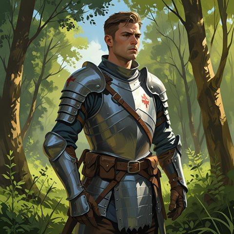

Le centenier Gaidéris

- Centenier de la compagnie des Convoyeurs : ordre dans les campagnes, escorte des caravanes, patrouilles aux frontières.
- Demi-elfe de taille moyenne, cheveux noirs, yeux en amande vert émeraude. Tunique verte brodée de feuilles, chapeau de chasse avec le médaillon de centenier, bel arc incrusté d'ivoire.
- Joyeux, facétieux, le plus populaire des officiers de la Capitainerie. Rarement en ville. Préfère les prisonniers aux morts et la manière douce. N'aime guère le centenier Baderic.
- Ancien garnement de Bourg-Preux. Melanchter, qui pense que son père est Eirin Main d'Argent, l'a pris sous son aile. Centenier depuis vingt ans.
- Automne 1002 CR : avec ses convoyeurs cachés dans une caravane, il écrase la bande de Nill Huit-Doigts. Depuis, il patrouille plus que jamais.